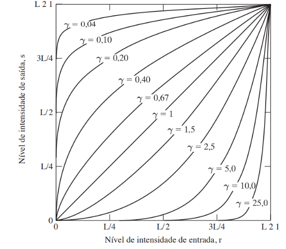
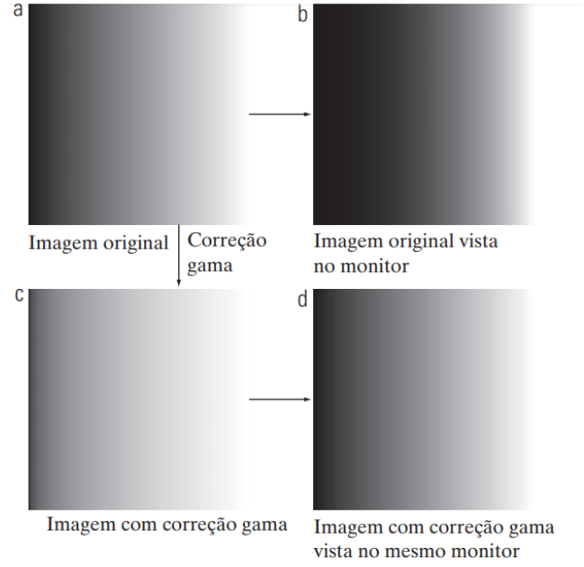
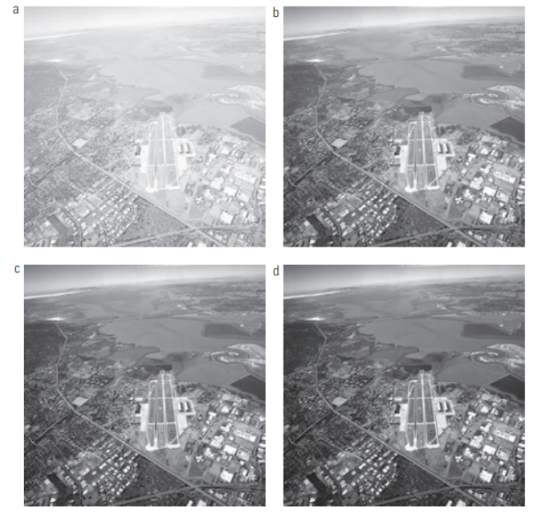

4.3 Transformação de Potência
As transformações de potência apresentam a forma básica:
\[s = cr^y\]
sendo c e γ constantes positivas. Ao plotar a transformação de potência para diferentes valores (y), e c=1, na Figura se observa um comportamento semelhante ao de expansão/compressão da transformação Logarítmica. Curvas de transformação de potência com valores de y menores que 1 (fração) tem um efeito parecido com a função Log, enquanto que para valores de y maiores que 1 se parecem mais com a logarítmica inversa.
Figura - Plotagens da equação \[s = cr^γ\] para vários valores de y.

Fonte: [2, p. 72].
Uma das aplicações da transformação de potência é a correção gama em dispositivos que funcionam de acordo com uma lei de potência, como em computadores (Gonzalez; Woods, 2010). Por exemplo, dispositivos de tubo de raios catódicos apresentam relação com a função potência de expoentes variando em aproximadamente 1,8 a 2,5. Para valores de gama próximos de 2,5 a imagem de saída no monitor tende a ser mais escura ( Figura b) que a imagem original (Figura a). A imagem corrigida (Figura c) pela correção gama, neste caso com gama menor que 1, gera uma saída (Figura d) mais parecida com a imagem original (Figura a).
Figura - Correção Gama.

- Imagem com variação gradativa de intensidade (gradiente). (b) Imagem vista em um monitor simulado com gama igual a 2,5. (c) Imagem com correção gama. (d) Imagem corrigida vista no mesmo monitor.
Fonte: [2, p. 72].
Outra utilidade da transformação de potência pode ser vista na Figura, em que a imagem original está desbotada, indicando que se deve aplicar uma compressão dos níveis mais baixos e expandir valores mais altos (Gonzalez; Woods, 2010). Assim, a transformação foi realizada com gama maior que 1. Os resultados do processamento com \(y = 3, y = 4,\) e \(y = 5\) podem ser vistos nas imagens (b), (c) e (d), respectivamente.
Figura - Transformações de potência.

- Imagem aérea. (b) a (d) Resultados da aplicação da transformação de potência com \(c = 1\) e \(y = 3, 4\) e \(5\), respectivamente. Fonte: [2, p. 74].
A distribuição dos níveis de intensidade (L) de uma imagem podem ser identificados em um histograma, ou seja, um gráfico com o número de pixels na imagem para cada nível de cinza. Assim, os histogramas podem servir de referência para várias manipulações no domínio espacial, além de fornecer estatísticas das imagens e ser útil em aplicações como compressão e segmentação. O histograma também pode ser interpretado como uma distribuição discreta da probabilidade de ocorrência do nível de intensidade \(r_k\) em uma imagem (Gonzalez; Woods, 2010):
\[p(r_k) = \frac{x_k}{MN} k = 0, 1,2, ..., L - 1 ()\]
sendo \(M\) e \(N\) as dimensões de linha e coluna da imagem, e \(n_k\) é o número de pixels da imagem com intensidade \(r_k\). Na Figura estão identificados quatro histogramas referentes a cada uma das imagens dos grãos de pólen do lado esquerdo. O eixo horizontal de cada histograma corresponde a valores de intensidade, \(r_k\), e o eixo vertical são os valores de \(p(r_k)\). Cada imagem destaca uma característica em relação à intensidade da imagem: escura, clara, baixo contraste e alto contraste.
Na imagem do topo, a mais escura, as barras do histograma estão concentradas no lado inferior (escuro) da escala de intensidades, enquanto que na imagem mais clara tendem à região oposta (Gonzalez; Woods, 2010). Uma imagem com baixo contraste, aparência desbotada e sem brilho, tem um histograma estreito normalmente localizado no meio da escala de intensidades. Os componentes do histograma na imagem de alto contraste estão distribuídos quase uniformemente em uma ampla faixa da escala de intensidades, com poucas linhas verticais sendo muito mais altas do que as outras. As imagens de alto contraste tendem a apresentar uma boa correspondência em relação aos detalhes de nível de cinza (Gonzalez; Woods, 2010).
Figura - Histogramas de uma imagem com grãos de pólen.

De cima para baixo: escura, clara, baixo contraste e alto contraste. Fonte: [2, p. 79].
Os histogramas são utilizados em grande parte para auxiliar em transformações de intensidade com foco em melhorar o contraste, tornando mais fácil a percepção de informações de interesse na imagem (Pedrini; Schwartz, 2008). Nos exemplos de transformações apresentados nesta seção (linear, logarítmica e de potência), a escolha do operador \((T)\) de transformação geralmente é empírica, em que se deve considerar a imagem original e o efeito desejado. Para transformar a imagem de forma que se altere o histograma de uma maneira específica e automática utilizam-se métodos em que o formato dos histogramas são pré-definidos ou atendem a um determinado padrão, como na equalização de histograma e especificação de histograma (Gonzalez; Woods, 2010).
Na equalização do histograma, o histograma da imagem original \(f\) é alterado de maneira que a imagem transformada g tenha uma distribuição aproximadamente uniforme dos níveis de cinza em uma faixa mais ampla de valores, assumindo características próximas de uma imagem de alto contraste (Pedrini; Schwartz, 2008). Neste método se aplica um operador de transformação de intensidade \((T)\) na forma contínua, Equação, que gera uma variável aleatória (valores de intensidade da imagem transformada) caracterizada por uma função densidade de probabilidade uniforme (PDF, probability density function) . \(s = T(r) = (L - 1)0rpr(w) dw ( )\) sendo w uma variável local da integração, L os níveis de cinza da imagem e pr(r) a PDF de r (valores de intensidade da imagem original). A demonstração da obtenção da PDF da variável \(s (p_s(s))\), na equação, pode ser vista com detalhes no livro “Processamento digital de imagens” (Gonzalez; Woods, 2010). O gráfico das PDFs de r e s estão identificados na Figura como \(pr(r)\) e \(p_s(s)\).
\[p_s(s) = \frac{1}{L-1} \] para $s \(\leq\) L - 1 ()$
Figura - Equalização de histograma na forma contínua.
 (a) Uma PDF arbitrária. (b) Resultado da aplicação da transformação para equalização.
(a) Uma PDF arbitrária. (b) Resultado da aplicação da transformação para equalização.
Fonte: [2, p. 81].
Para que esses conceitos sejam aplicados no processamento de imagens eles devem ser expressos na forma discreta. A transformação na Equação da forma discreta é:
\(S_k = T(r_k) = (L - 1) \sum {i=1}^n x i\)
Refêrencias
[2] R. C. Gonzalez e R. C. Woods, Processamento digital de imagens, 3º ed. São Paulo: Pearson Prentice Hall, 2010.